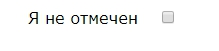
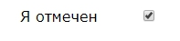

Имеется HTML-код:
<input type="checkbox" /><span>Я не отмечен</span>
<style type="text/css">
body {
font-family: Verdana;
font-size: 16px;
}
</style>
Добавить стили, чтобы флажок выглядел так:
А после клика по нему - так:
Подсказка:Используйте псевдоклассы :checked, :before, абсолютное позиционирование
HTML менять нельзя.
Имеется HTML-код:
<div class="task-2">
<div>4</div>
<div>1</div>
<div>3</div>
<div>2</div>
<div>6</div>
<div>5</div>
</div>
<style type="text/css">
.task-2 {
width: 250px;
}
.task-2 div {
line-height: 50px;
text-align: center;
width: 50px;
height: 50px;
background: #DFD;
border: 1px solid #000;
box-sizing: border-box;
}
.task-2 div:nth-child(1) {
}
.task-2 div:nth-child(2) {
}
.task-2 div:nth-child(3) {
}
.task-2 div:nth-child(4) {
}
.task-2 div:nth-child(5) {
}
.task-2 div:nth-child(6) {
}
</style>
Используя только CSS выстроить блоки в два ряда: в первом ряду по порядку блоки с цифрами 1,2,3,4; во втором - 5,6. Пробелы между блоками внутри ряда допустимы. Переопределять "position" и "display" у блоков нельзя.
Подсказка:Используйте "float: left|right" и "clear:both"
Решить задачу №2 с помощью "position: relative" и "margin". Использовать "left|top|bottom|right" нельзя.
Решить задачу №2 с помощью "position: absolute". Использовать "left|top".
Имеется HTML-код:
<div></div>
<style type="text/css">
div {
width: 300px;
height: 200px;
background: #F00;
overflow: hidden;
transition: all 1000ms;
background: linear-gradient(135deg, #000 0%, #F00 100%);
}
div:hover {
background: #F00;
transition: all 1000ms;
}
</style>
Проблема этого решения в том, что при наведении на блок он на долю секунды становится белым, а потом уже плавно становится красным. Подумайте, как можно убрать этот "лаг".